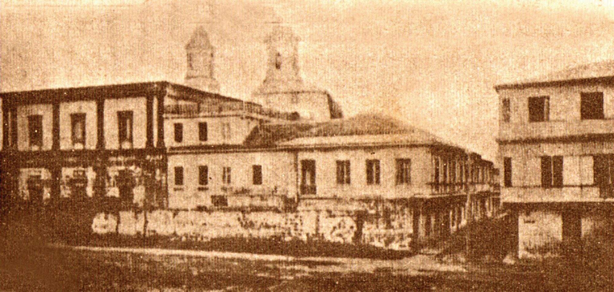
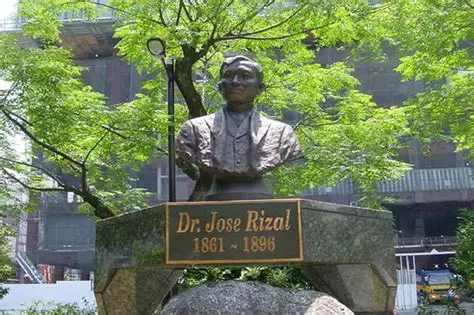

Early Life

José Protacio Rizal Mercado y Alonzo Realonda was born on June 19, 1861 in Calamba, Laguna, Philippines. He was the seventh of eleven children of Francisco Mercado and Teodora Alonso. His family was relatively well-off, which allowed him access to good education and opportunities.
From a young age, Rizal showed great intelligence, creativity, and discipline. His mother was his first teacher and taught him prayers, reading, and moral values. At age 3, Rizal learned to read, and by age 8, he had written his first poem, "Sa Aking Mga Kabata", which emphasized the importance of loving one’s language.
Education
Rizal’s early schooling began under private tutors, then continued at Biñan, Laguna. In 1872, he enrolled at Ateneo Municipal de Manila, where he excelled and earned a Bachelor of Arts degree with highest honors in 1877. He also pursued further studies in agriculture at the University of Santo Tomas.
However, discrimination against Filipino students pushed him to continue his education abroad. In 1882, Rizal sailed to Spain and enrolled at the Universidad Central de Madrid, earning a Licentiate in Medicine in 1884 and a Licentiate in Philosophy and Letters in 1885. He specialized in ophthalmology to treat his mother’s failing eyesight.
He further trained in Paris and Heidelberg, Germany, becoming a skilled eye doctor. While in Europe, Rizal also mastered multiple languages, including Spanish, French, German, and English.
Travels
Rizal’s travels played a vital role in shaping his worldview and reformist ideals. He visited various countries across Asia, Europe, and America, including:
- Spain – Studied medicine and became involved in reformist circles.
- France and Germany – Furthered his medical training and published Noli Me Tangere.
- Belgium – Completed his second novel, El Filibusterismo.
- England – Studied Philippine history and annotated Antonio de Morga’s book.
- Japan – Stayed in Yokohama and Tokyo, where he admired Japanese culture and fell in love with O-Sei-San.
- United States – Observed American democracy and its contradictions with racism.
- Hong Kong – Practiced medicine and lived with his family before returning to Manila.
Major Works

Rizal was a prolific writer, producing novels, essays, poems, and letters that awakened Filipino nationalism.
- Noli Me Tangere (1887) – Exposed Spanish abuses and inspired nationalist consciousness.
- El Filibusterismo (1891) – A sequel calling for reform and revolution.
- Essays: The Philippines a Century Hence, Indolence of the Filipinos.
- Poems: To the Filipino Youth, Mi Último Adiós (his farewell poem).
- Other contributions: scientific studies on Philippine flora and fauna, sketches, sculptures, and social reforms.
Exile in Dapitan

In 1892, upon returning to the Philippines, Rizal founded La Liga Filipina, a reformist society. However, Spanish authorities saw him as a threat and exiled him to Dapitan, Zamboanga del Norte, from 1892 to 1896.
During his exile, Rizal lived a productive life:
- Practiced medicine and treated patients, rich and poor alike.
- Established a school and taught local children.
- Introduced modern agricultural techniques and built a water supply system.
- Engaged in scientific research, including studies of nature and wildlife.
Arrest and Trial

In 1896, after the outbreak of the Philippine Revolution led by the Katipunan, Rizal was accused of sedition, rebellion, and conspiracy. Though he was not directly involved in the armed uprising, his writings were said to have inspired the revolutionaries.
He was arrested, imprisoned in Fort Santiago, and subjected to a mock trial. Despite his defense, Rizal was sentenced to death by firing squad.
Execution

On December 30, 1896, at Bagumbayan (now Luneta Park, Manila), Rizal was executed by firing squad. At 35 years old, he faced his death with dignity, turning to face his executioners as a final act of defiance.
His final poem, Mi Último Adiós, written in his cell, became a lasting symbol of patriotism and sacrifice for the Philippines.
Legacy

Rizal’s martyrdom united Filipinos and intensified the struggle for independence from Spain. He is remembered as the country’s national hero, a man of intellect, compassion, and courage who believed in peaceful reforms through education and enlightenment.
Today, Rizal’s life and works continue to inspire movements for freedom, justice, and nation-building. Monuments, parks, and institutions across the Philippines and abroad stand in his honor.